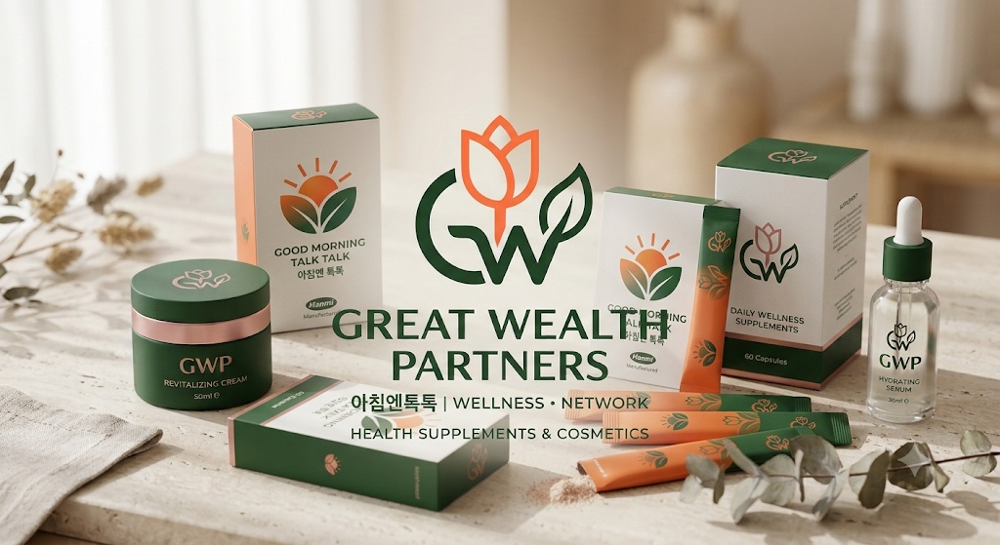

장 생태계의 균형에서 시작되는
위대한 건강과 풍요
GW Partners(Great Wealth Partners)는 스탠포드 대학교 의과대학의 MACs(미생물 접근 가능 탄수화물) 과학 이론과 한국 전통 본초의 지혜를 결합한 한국식 맥식단으로, 인체 장 생태계의 자생적 균형과 건강한 삶의 가치를 연결합니다.
Well-aging
건강하고 품격 있는 노화
Inner Beauty
장 생태계 중심 내면 건강
Financial Wealth
지속 가능한 풍요와 자유

GOOD MORNING TALK TALK
아침엔 톡톡 (1포 5.5g)
스탠포드 의대 MACs 포뮬러
대장 끝까지 전달되어 장내 공생 미생물의 먹이가 되는 복합 식물성 다당류
23종 한국식 엄선 원료
차전자피, 줄풀, 귀리, 17종 혼합유산균(BNR17 포함) 황금 배합
50년 전통 (주)한미양행 제조
국내 최초 HACCP 및 GMP 동시 인증 시설의 철저한 품질 관리
당신의 삶을 바꾸는 위대한 연결
GW Partners는 건강한 신체와 균형 잡힌 생태계, 그리고 풍요로운 미래가 하나로 이어지는 바른 웰니스 문화를 만들어 갑니다.
당신의 삶을 바꾸는 위대한 연결,
Great Wealth Partners가 시작합니다!
- Well-aging 건강하고 아름답게 늙어가는 것
- Inner Beauty 몸속부터 건강과 아름다움을 채우는 것
- Financial Wealth 재정적 풍요와 자유
대표이사 이 용 헌

건강한 이너뷰티와 토털 웰니스의 연결
GW Partners는 시그니처 '아침엔 톡톡'을 시작으로 장 생태계 과학 기반의 건강기능식품과 이너뷰티 케어 라인업을 통해 신체 안팎의 자생적 아름다움과 풍요로운 삶을 완성합니다.

GREAT WEALTH PARTNERS
Wellness & Inner Beauty Solution
인간은 세포와 미생물로 이루어진
초유기체(Superorganism)다
우리 몸의 대장은 단순한 소화 기관이 아니라, 인간 세포와 대등하거나 그 이상으로 존재하는 수십조 미생물이 전신 대사·면역·노화 시계를 지휘하는 제2의 장기입니다.
HUMAN CELLS · 인간 세포
약 30조 개
고유 유전자 약 20,000~25,000개 보유. 신체의 기본 구조를 담당하지만 대사 다양성의 상당 부분은 공생 미생물에 의존합니다.
MICROBIOME · 공생 미생물
약 38조 ~ 39조 개
인간 유전자의 100배 이상인 수백만~수천만 개 유전자를 보유하여 음식물 분해, 단쇄지방산(SCFA) 합성, 장벽 보호 및 면역 훈련을 수행합니다.
VIROME · 박테리오파지·바이롬
약 100조 ~ 1,000조 개
박테리오파지(90% 이상)를 중심으로 장내 세균의 과잉 증식을 조절하고 생태계 균형과 면역 조절 신호를 유지하는 정교한 네트워크입니다.
장벽 치밀결합(Tight Junction) 강화와
핵심 대사산물 단쇄지방산(SCFA)
서구화된 초가공식품과 식이섬유 결핍은 장 점막 보호층을 무너뜨려 장 누수 증후군(Leaky Gut)을 유발하고, 장내 유해균의 내독소(LPS)가 혈류로 유입되어 전신 만성 염증의 원인이 됩니다.
낙산 (Butyrate)
대장 상피세포의 핵심 에너지원, 치밀결합 단백질 강화 및 염증 억제
프로피온산 (Propionate)
간 내 지방 합성 조절, 포만감 호르몬(GLP-1, PYY) 분비 촉진
아세트산 (Acetate)
장내 약산성(pH) 환경 조성으로 유해균 증식 억제 및 전신 에너지 순환
장벽 방어 메커니즘 요약
① 점액층(Mucus Layer) 보호
MACs 식이섬유가 풍부할 때 미생물이 점막을 갉아먹지 않고 두터운 보호 점액층을 유지합니다.
② 내독소(LPS) 혈관 유입 차단
단쇄지방산이 상피세포 간 틈새를 촘촘히 닫아주어 독소 유출과 만성 염증 고리를 끊어냅니다.
스탠포드 의대 MACs 이론과
한국식 맥식단(Korean MAC Plan)
스탠포드 대학교 의과대학 미생물학·면역학과 저스틴 손넨버그(Justin Sonnenburg) & 에리카 손넨버그(Erica Sonnenburg) 박사 연구팀은 현대인의 만성질환과 면역 저하의 핵심 원인이 MACs(Microbiota-Accessible Carbohydrates, 미생물 접근 가능 탄수화물) 결핍으로 인한 장내 미생물 종 다양성 멸종에 있음을 규명했습니다.
"외부 균주(씨앗)만 밀어 넣는 것보다, 미생물이 먹고 자랄 토양(MACs)을 일구는 것이 본질입니다."
황폐해진 장 환경에 단편적인 유산균만 투입하면 정착하지 못하고 대부분 배출됩니다. 위·소장 효소에 분해되지 않고 대장 끝까지 도달하는 복합 식물성 MACs가 공급되어야 수조 마리 공생 미생물이 자생적으로 살아납니다.
식단별 단쇄지방산(SCFA) 생성 효율 비교
MAC 식단 섭취 시 일반 식단 대비 단쇄지방산 생성 효율 최대 3배 이상 증대
《동의보감》 군신좌사(君臣佐使) 원리로 완성한 한국식 맥식단
식품공학적 정제 부형제를 최소화하고, 한국인의 장 환경에 최적화된 자연 원물과 토종 발효의 조화로운 4단계 메커니즘을 설계했습니다.
줄풀 · 조릿대 · 차전자피
인간 소화효소에 깨지지 않는 거친 식물성 섬유질 그물망이 장내 묵은 습열(濕熱)과 노폐물을 흡착해 시원하게 배출합니다.
광귤나무 (지실·지각)
정체된 장관의 기체(氣滯)를 풀어주고 둔해진 장 근육의 자연스러운 연동 운동 리듬을 깨워줍니다.
햄프씨드 · 칡뿌리(갈근)
건조해진 장 점막에 촉촉한 진액과 수용성 보호 겔을 공급하여 장벽 손상을 감싸고 부드러운 순환을 돕습니다.
귀리 · 발효곡물 · L.brevis
비위 기운을 보강하고 한국인 장에 특화된 유산균 발효 환경(미생물 밥상)을 조성하여 단쇄지방산 생성을 극대화합니다.
편안하고 균형 잡힌 장 건강 솔루션,
아침엔 톡톡 (Good Morning Talk Talk)
1포(5.5g)당 차전자피분말 4,400mg 중심의 23가지 프리미엄 원료 배합. 아래 사진을 클릭하여 실제 실물 패키지와 정교한 제품 형태를 확인해 보세요.
실물 패키지 (30포 · 15포 구성)
차전자피분말 4,400mg/포 · (주)한미양행 제조
아침엔 톡톡 스펙 요약
물과 함께 섭취 시 식이섬유가 수분을 머금어 부드러운 장내 정화 작용을 수행합니다.
올바른 섭취 팁
1포 섭취 시 미지근하거나 따뜻한 물(250ml 이상)을 충분히 함께 마셔주시면, 수용성·불용성 식이섬유가 팽창하여 최적의 장내 겔화 및 정화 환경을 형성합니다.
장 생태계 복원에 따른 3단계 인체 변화 타임라인
단계를 선택하시면 과학적 작용 기전과 주요 체감 변화를 확인하실 수 있습니다.
핵심 원료에 의한 대량 식이섬유 흡착 및 배출
• 과학적 기전: 초고함량 차전자피분말(4,400mg)과 난소화성말토덱스트린, 귀리식이섬유, 줄풀·조릿대가 수분을 흡수해 물리적으로 팽창하며 장관 내 묵은 숙변, 습열, 가스를 흡착하여 배출합니다.
• 주요 체감 변화: 복부 팽만감 감소, 규칙적인 배변 리듬 확보, 아침마다 몸이 가벼워지는 상쾌함을 경험합니다.
KEY SYNERGY INGREDIENTS
주요 성분 및 기능성 정보 (1번 ~ 23번 전 원료)
원료명 또는 건강 키워드(예: 변비, 혈당, 콜레스테롤, 유산균, 피부, 간)로 검색해 보세요.
섭취 초기 정화 반응(명현)의 과학적 해석 및 실천 수칙
지방 증가가 아닌 물리적 수분 흡수 현상입니다. 핵심 원료인 차전자피와 귀리의 수용성 식이섬유는 자기 무게의 40~50배에 달하는 수분을 흡수해 겔(Gel)화되면서 장내에 묵어 있던 건조한 숙변과 노폐물을 부드럽게 불립니다. 이 과정에서 일시적으로 체수분 수치가 올라갈 수 있으나, 노폐물이 배출되고 나면 이전보다 훨씬 가볍고 슬림한 상태로 돌아갑니다.
50년 이상 축적된 제조 명가,
주식회사 한미양행 책임 제조
'아침엔 톡톡'은 1967년 설립되어 대한민국 건강기능식품 역사와 함께해 온 최장수 전문 제조기업 주식회사 한미양행(Hanmi Nutrition Inc.)의 엄격한 품질 시스템 아래 생산됩니다.
국내 최초 HACCP & GMP 동시 인증
건강보조식품 및 특수영양식품 분야에서 위해요소중점관리기준(HACCP)과 우수건강기능식품제조기준(GMP)을 동시에 획득했습니다.
연 매출 1,000억 달성 최장수 건기식 기업
50년 이상의 R&D 노하우와 최신 자동화 생산 설비로 원료 선별부터 완제품 출고까지 철저하게 검증합니다.
• 본사 및 공장: 경기도 파주시 문산읍 통일로1888번길 44-20 (대표이사: 정명수) | ※ '한미약품(한미그룹)'과는 사명이 유사하나 별개의 건강기능식품 전문 기업입니다.
HANMI NATURAL NUTRITION
(주)한미양행
1967
설립 연도
GMP·HACCP
국내 최초 동시 인증